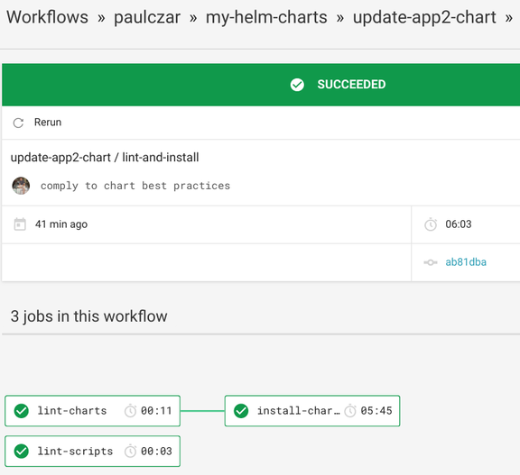

Creating a Helm Chart Repository - Part 3
July 3, 2019
Introduction
Welcome to a three part blog series on Creating a Helm Chart Repository. In part 1 of this series I demonstrated creating a Helm chart repository using GitHub and GitHub Pages. In part 2 I will add Automation to automatically update the repository, and in part 3 I will add testing for changes to the charts themselves.
If you’re into Videos, I walked JJ through starting with Helm from scratch all the way to creating a Helm Repo and CI/CD.
Use Circle CI to test Helm Charts
Note - You could use any other CI system here, I chose Circle as it is easy to integrate with GitHub and has a free tier. If you do use a different CI system the scripts should still work, but you’ll need to rewrite a config file suitable for your CI choice.
Introducing Chart Testing
The Helm community has built a tool very imaginitively named [Chart Testing]((https://github.com/helm/chart-testing) specifically for testing Helm charts. Not only is it capable of linting and performing test installs of a Helm chart, but its also designed to work within a monorepo and only test those charts that have changed.
You can download and use Chart Testing locally, but really the power of it is using it in CI, so lets go straight to that.
Creat a Chart Testing script and update Circle CI config
Note: While I would usually use Concourse CI for my CI workflows, I wanted to only use managed services and I chose Circle as that is already commonly used in the Helm community.
We need to add a new script, a chart-testing config file, and update the Circle CI config file.
./circleci/config.yaml
Create two new jobs:
These scripts and configs were heavily borrowed from Reinhard Nägele who is a primary maintainer of both chart-testing and chart-releaser.
The first job tells Chart Testing to lint the charts according to the Helm Community Best Practices Guide.
The second job tells Chart Testing to actually install and test the charts using KIND (Kubernetes IN Docker).
lint-charts:
docker:
- image: gcr.io/kubernetes-charts-ci/test-image:v3.3.2
steps:
- checkout
- run:
name: lint
command: |
git remote add upstream https://github.com/paulczar/percona-helm-charts
git fetch upstream master
ct lint --config .circleci/ct.yaml
install-charts:
machine: true
steps:
- checkout
- run:
no_output_timeout: 12m
command: .circleci/install_charts.sh
Add a new workflow telling Circle to lint and test any changes.
Note: it excludes the
masterbranch as we don’t want to try to retest charts as they’re merged in after successfully testing the new commit.:
lint-and-install:
jobs:
- lint-scripts
- lint-charts:
filters:
branches:
ignore: master
tags:
ignore: /.*/
- install-charts:
requires:
- lint-charts
./circleci/ct.yaml
This file provides configuration for Chart Testing. For now all we need is to tell it to provide Helm with a longer timeout:
helm-extra-args: --timeout 600
./circleci/kind-config.yaml
This file provides a configuration for KIND to use:
kind: Cluster
apiVersion: kind.sigs.k8s.io/v1alpha3
nodes:
- role: control-plane
- role: worker
- role: worker
./circleci/install_charts.sh
Finally this script will install KIND and will perform test installations for any changed Helm Charts:
#!/usr/bin/env bash
set -o errexit
set -o nounset
set -o pipefail
readonly CT_VERSION=v2.3.3
readonly KIND_VERSION=0.2.1
readonly CLUSTER_NAME=chart-testing
readonly K8S_VERSION=v1.14.0
run_ct_container() {
echo 'Running ct container...'
docker run --rm --interactive --detach --network host --name ct \
--volume "$(pwd)/.circleci/ct.yaml:/etc/ct/ct.yaml" \
--volume "$(pwd):/workdir" \
--workdir /workdir \
"quay.io/helmpack/chart-testing:$CT_VERSION" \
cat
echo
}
cleanup() {
echo 'Removing ct container...'
docker kill ct > /dev/null 2>&1
echo 'Done!'
}
docker_exec() {
docker exec --interactive ct "$@"
}
create_kind_cluster() {
echo 'Installing kind...'
curl -sSLo kind "https://github.com/kubernetes-sigs/kind/releases/download/$KIND_VERSION/kind-linux-amd64"
chmod +x kind
sudo mv kind /usr/local/bin/kind
kind create cluster --name "$CLUSTER_NAME" --config .circleci/kind-config.yaml --image "kindest/node:$K8S_VERSION" --wait 60s
docker_exec mkdir -p /root/.kube
echo 'Copying kubeconfig to container...'
local kubeconfig
kubeconfig="$(kind get kubeconfig-path --name "$CLUSTER_NAME")"
docker cp "$kubeconfig" ct:/root/.kube/config
docker_exec kubectl cluster-info
echo
docker_exec kubectl get nodes
echo
}
install_local_path_provisioner() {
docker_exec kubectl delete storageclass standard
docker_exec kubectl apply -f https://raw.githubusercontent.com/rancher/local-path-provisioner/master/deploy/local-path-storage.yaml
}
install_tiller() {
echo 'Installing Tiller...'
docker_exec kubectl --namespace kube-system create sa tiller
docker_exec kubectl create clusterrolebinding tiller-cluster-rule --clusterrole=cluster-admin --serviceaccount=kube-system:tiller
docker_exec helm init --service-account tiller --upgrade --wait
echo
}
install_charts() {
docker_exec ct install
echo
}
main() {
run_ct_container
trap cleanup EXIT
changed=$(docker_exec ct list-changed)
if [[ -z "$changed" ]]; then
echo 'No chart changes detected.'
return
fi
echo 'Chart changes detected.'
create_kind_cluster
install_local_path_provisioner
install_tiller
install_charts
}
main
Commit the changes
Next up commit these new changes to your master branch:
$ git add .
$ git commit -m 'add chart testing on PRs'
$ git push origin master
Test the new Automation
Create a new branch:
$ git checkout -b update-app2-chart
Modify the app2 Chart.yaml to be a new version number:
apiVersion: v1
appVersion: "1.0"
description: A Helm chart for Kubernetes
name: app2
version: 0.1.1
Commit and Push the changes:
$ git add charts/app2/Chart.yaml
$ git commit -m 'bump chart2 version'
$ git push origin update-app2-chart
Circle CI should run tests and should fail:

This failure is because when helm create creates your chart, it doesn’t implement all of our best practices. If you check in the Circle CI job log you’ll see:
Error validating data /root/project/charts/app2/Chart.yaml with schema /etc/ct/chart_schema.yaml
home: Required field missing
The error is quite clear, we should have a field home in our Chart.yaml. In fact there should also be a maintainers field. Let’s add those into both chart’s Chart.yaml files:
home: http://github.com/paulczar/my-helm-charts
maintainers:
- name: paulczar
email: username.taken@gmail.com
Note: Since you’re also changing App1, you should bump its version a patch level to
0.1.2, all changes to a Chart, even non functional one should bump the chart version.
Note: Ensure you leave a blank line at the end of the
Chart.yamlfile. I forgot to and had to resubmit.
Push these new changes:
$ git add .
$ git commit -m 'comply to chart best practices'
$ git push origin update-app2-chart
After a few seconds you should see the new jobs start in CircleCI and this time all three tasks should complete successfully:

It took about 6 minutes to run, because it did a full install of both Charts (as we changed them both) to a disposable KIND cluster.
Note: Since this was a branch, the charts were not released to the Chart Repository as that job is only triggered on the
master branch.
Next you’ll want to create a pull request for this change, you can do that via the GitHub web ui:

Note: Since Circle CI has already tested the commits in this PR (Pull Request) it shows handy little test pass/fail marks against the commits.
Since the PR is showing as passing tests, you can go ahead and Merge it by clicking that green Merge button (although I like to use Squash and Merge).
This Merge into the master branch will kick off the release-charts workflow and after a few seconds we’ll have an updated Helm Repository:
$ curl http://tech.paulcz.net/my-helm-charts/index.yaml
apiVersion: v1
entries:
...
...
app1:
name: app1
version: 0.1.2
...
...
app2:
name: app2
version: 0.1.1
...
...
Testing Pull Requests
In the advanced settings of Circle CI you can tell it to automatically test Pull Requests that come from forks of your GitHub repository. Adding this is a great feature if you want others to work on your code with you. However you do need to protect your secrets.
For example a bad actor could add “echo $CH_TOKEN” to one of the scripts and steal my GitHub token which they could then use to mess with my Repositories.
For that reason I’ve opted not to include that in this example.
Conclusion
In Part 1 we created set of Helm Charts managed in source control (GitHub).
In Part 2 we added automation via CircleCI to automate building and deploying Chart packages to a Helm Chart Repository hosted in GitHub Pages and GitHub Releases.
In Part 3 we added further automation to test changes in those Helm charts and to pass them through rigorous testing before allowing them to be merged into the master branch.